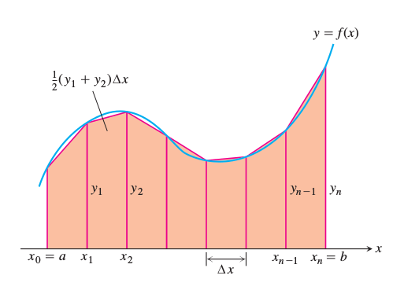

Sayısal Entegrasyon (Numerical Integration) ve Sonlu Farklılıklar ile Sayısal Türev (Differentiation with Finite Differences)
Sayısal Türev
Sonlu farklılıklar (finite differences) ile yaklaşık türev almak için, herhangi bir $x$ noktasında
$$ f'(x) = \frac{f(x + \epsilon) - f(x)}{\epsilon} $$
hesabını yapabiliriz. Tek boyutta tek sayı $\epsilon$ ile adım atılıp $f$ üzerindeki değişiklik üzerinden hesap yapılır, çok boyutlu durumda birer birer her kordinatta $\epsilon$ kadar adım atılır, ve bu adım üzerinden $f$ türevi alınıp o kordinat için kısmı türev olarak kaydedilir, $x = \left[\begin{array}{ccc} x_0 & ... & x_n \end{array}\right]$ için
$$ f'(x) = \left[\begin{array}{c} \frac{ f \left( [\begin{array}{ccc} x_0 + \epsilon & ... & x_n \end{array}]\right) - f(x)}{\epsilon} \\ \vdots \\ \frac{ f \left( [\begin{array}{ccc} x_0 & ... & x_n+\epsilon \end{array}]\right) - f(x)}{\epsilon} \end{array}\right] $$
Alttaki kod [3]'teki approx_fprime metotunu
baz almıştır,
eps = np.sqrt(np.finfo(float).eps)
def _approx_fprime_helper(xk, f, epsilon):
f0 = f(xk)
grad = np.zeros((len(xk),), float)
ei = np.zeros((len(xk),), float)
for k in range(len(xk)):
ei[k] = 1.0
d = epsilon * ei
df = (f(xk + d) - f0) / d[k]
if not np.isscalar(df):
try:
df = df.item()
except (ValueError, AttributeError):
raise ValueError("The user-provided "
"objective function must "
"return a scalar value.")
grad[k] = df
ei[k] = 0.0
return grad
Test olarak optimizasyonda bolca kullanılan Rosenbrock fonksiyonunu kullanabiliriz. Altta hem analitik olarak hem de sayısal olarak hesaplanmış türev sonuçlarını görebiliyoruz,
rosen = lambda x: (1-x[0])**2 + 100*(x[1]-x[0]**2)**2
def rosen_d(x):
return np.array([2*100*(x[1] - x[0]**2)*(-2*x[0]) - 2*(1.-x[0]), 2*100*(x[1]-x[0]**2)])
x = [0.5, 0.5]
res = _approx_fprime_helper(x, rosen, eps)
print ('analitik', res, 'sayisal', rosen_d(x))
x = [-0.5, 0.5]
res = _approx_fprime_helper(x, rosen, eps)
print ('analitik', res, 'sayisal', rosen_d(x))
analitik [-50.99999928 50.00000149] sayisal [-51. 50.]
analitik [47.00000072 50.00000143] sayisal [47. 50.]
Sayısal Entegrasyon
Trapezoid Bazlı
$F(x)$ fonksiyonunu bazen sembolik olarak entegre etmek zor olabilir. Bu durumlarda sayısal çözüm daha kullanışlı olabilir. Mesela $F(x)$'in $x_0$ ve $x_1$ arasındaki entegrali aslında bir alan hesabıdır, ve bu alanı, $x$ aralığını ufak parçalara bölerek, ve bu parçaları kullanarak yaklaşık bir alan hesabı yapıp sonuçları toplayarak elde edebiliriz.
$x_0$ ve $x_1$ arasını $N$ parçaya bölelim.
Artık entegrali yaklaşık olarak
$$ \int_{x_0}^{x_1} F(x) \mathrm{d} x \approx \sum_{i=1}^{N} F(x_i) $$
hesaplayabiliriz. $N$ arttırıldıkça dikdörtgenler daha fazlalaşacak, ve gerçek alana daha fazla yaklaşacağız.
Üstteki metot Euler'in metotu olarak biliniyor, ve anlatması, kodlaması en rahat olan yöntem bu. Bir diğer yöntem, trapezoid yöntemi olarak bilinir, ve daha iyi yaklaşıksal yeteneğinin olduğu bilimektedir. Bu yöntemle pek çok dikdörtgen alanı yerine pek çok trapezoid alanı hesaplıyoruz [1, sf. 279].

$$ \sum_{i=1}^{N} \Delta x \frac{1}{2} [F(x_i) + F(x_{i+1})] $$
Bu formül iki kenarı $a,b$ olan ve genişliği $\Delta x$ olan trapezoid'in alanının $1/2(a+b)\Delta x$ olmasından ileri geliyor.
Örnek
$F(x) = 3 x e^{-0.7 x}$'in $x_0=0.5$ ve $x_1=5$ arasındaki entegralini hesaplayalım,
Rutin trapz ile bunu yapabiliriz,
x = np.linspace(0.5,5.0,1000)
y = 3.0*x*np.exp(-0.7*xval)
W = np.trapz(y,x=x)
print (W)
4.99249134896902
Trapezoidsel hesabı elle yapmak isteyenler için bazı kolaylaştırıcı ek formüller [2, sf. 605] alttadır,

Trapezoidsel entegral $T$ ve $y_i = f(x_i)$ için
$$ T = \frac{1}{2} (y_0 + y_1)\Delta x + \frac{1}{2} (y_1 + y_2)\Delta x +... + \frac{1}{2} (y_{n-2} + y_{n-1})\Delta x + \frac{1}{2} (y_{n-1} + y_n)\Delta x $$
$$ = \Delta x (\frac{1}{2}y_0 + y_1 + y_2 + ... + y_{n-1} + \frac{1}{2} y_n ) $$
$$ = \frac{\Delta x}{2} (y_0 + 2y_1 + 2y_2 + ... + 2y_{n-1} + y_n) $$
Örnek
$n=4$ ile $\int_{1}^{2} x^2 \mathrm{d} x$ hesabını yapalım.
$\Delta x$ = 1/4 olur,
$$ T = \frac{\Delta x}{2} (y_0 + 2y_1 + 2y_2 + 2y_3 + y_4) $$
$$ = \frac{1}{8} (1 + 2 (\frac{25}{16}) + 2(\frac{36}{16}) + 2 (\frac{49}{16}) + 4) $$
$$ = \frac{75}{32} = 2.34375 $$
Çağrı trapz ile
x = np.linspace(1.0,2.0,4)
y = x**2
T = np.trapz(y,x=x)
print (T)
2.351851851851852
Üstteki hesap tabii ki analitik şekilde de çok rahat yapılabilir,
$$ \int_{1}^{2} x^2 \mathrm{d} x = \frac{x^3}{3} \biggr|_{1}^{2} = \frac{8}{3}-\frac{1}{3} = \frac{7}{3} $$
print (7./3)
2.3333333333333335
Kaynaklar
[1] Sorenssen, Elementary Mechanics Using Python
[2] Thomas, Thomas's Calculus
[3] Scipy, https://github.com/scipy/scipy/blob/master/scipy/optimize/optimize.py
Yukarı